30天鐵人賽介紹 AWS 雲端世界 - 29: 雲端開發環境 Cloud9 與雲端私有git儲存庫 CodeCommit
What is Cloud9
AWS Cloud9 是用來撰寫、執行和偵錯程式碼的雲端 IDE，只需要一個瀏覽器便能撰寫、執行和偵錯程式碼，還能與團隊共享開發環境，並將程式搭配在一起，並支援直接與團隊成員溝通，可即時看到對方輸入的內容，透過 IDE 即可與團隊其他人聊天對談。輕鬆達到即時合作撰寫程式碼的效果。
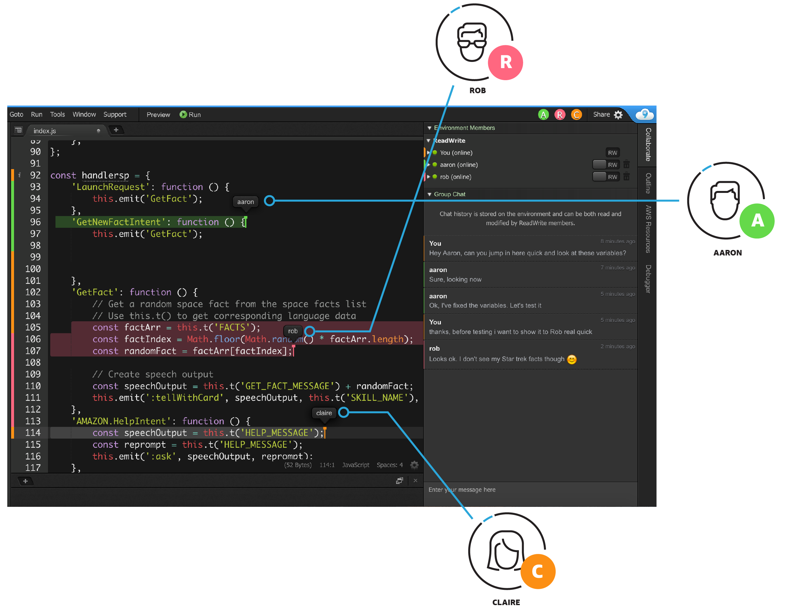
而 Cloud9 本身是無須額外收費的，只需支付用來執行和存放程式碼的運算和儲存資源 (例如，EC2 執行個體、 EBS 磁碟區) 的費用。收費範例可參考AWS Cloud9 定價
目前 Cloud9 支援的語言有:
除了程式碼撰寫與開發外，甚至還支援基本的影像編輯功能，可以直接在瀏覽器中裁剪、旋轉或翻轉影像或者調整大小。
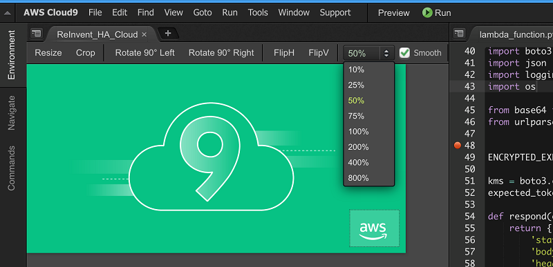
當前 AWS 不是所有 Region 都有支援 Cloud9 使用上記得要切換至有支援的 Region:

當建立cloud9 環境時會選擇執行個體的規模，這邊會依據選擇的等級不同而有不同的收費，就看大家對於開發環境的要求要多好瞜:
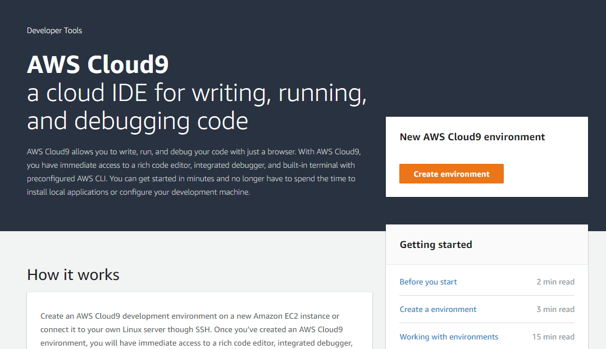
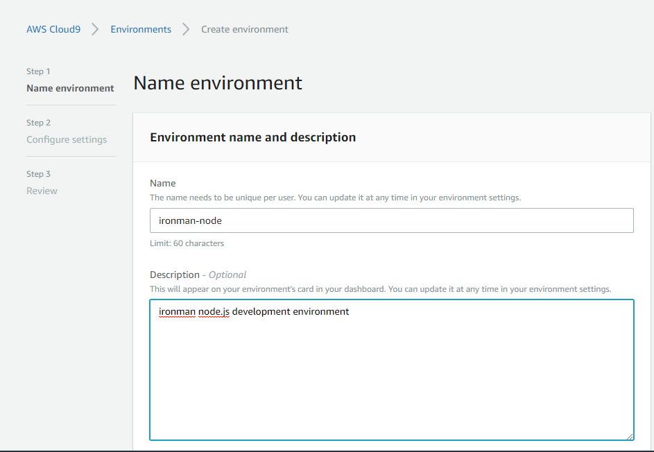
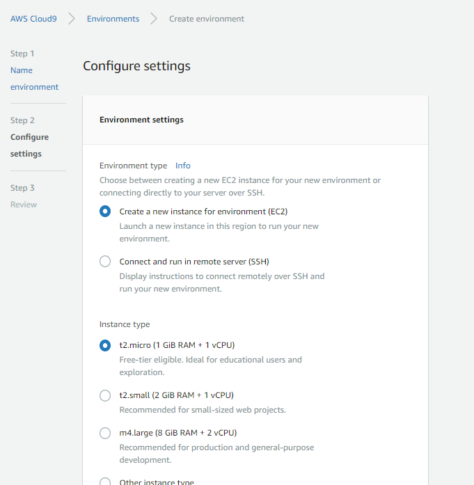
在設定預設會勾選自動 Cost-saving setting，預設30分鐘，這邊記得調整為合適的數值:
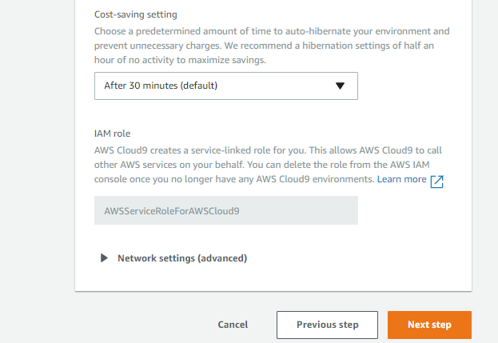
官方也有一些注意事項可以幫助我們妥善的利用此環境:
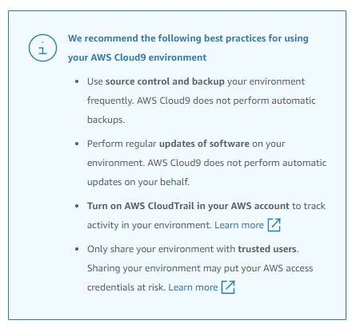
而當環境建置好後即可看到整個編輯器的樣貌:

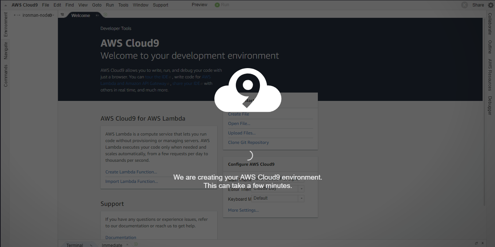
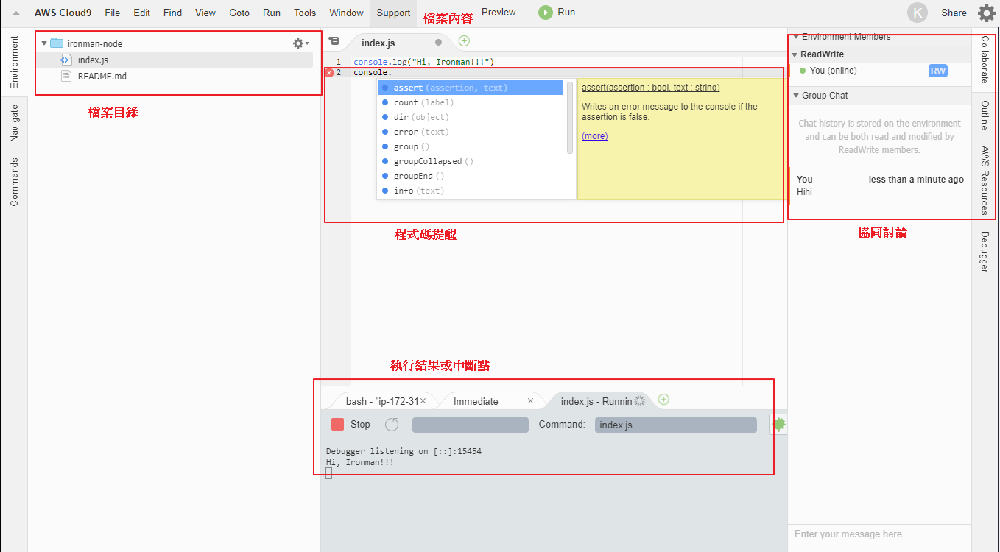
這邊很推薦大家花個3分鐘觀看 AWS re:Invent 2017 - Introducing AWS Cloud9: Werner Vogels Keynote 的正妹介紹，動態的來讓大家了解整個 IDE 的面貌!
What is CodeCommit
AWS CodeCommit 是一種雲端私有 git 服務，可讓公司輕鬆地託私有 Git 儲存庫並具備安全和可高度擴展而無須擔心設置與硬體相關問題。
對於現代開發來講版本管控已經是根深蒂固的觀念，而針對原始碼的版本控管則是最基本的。對於想建立自己私有 Git 儲存庫的公司，以往可能只能選擇 github、Gitlab 或是 bitbucket ，AWS CodeCommit則是提供我們額外的一個選擇。 CodeCommit 支援所有 Git 命令並能與現有 Git 工具搭配使用，可以在 CodeCommit 繼續使用既有的開發環境外掛程式、持續整合/持續交付(CI/CD)系統，以及圖形化用戶端工具。
而 CodeCommit 的優勢則在與其他 AWS 服務整合完善，從開發的IDE到部屬的CI/CD工具與專案管理工具都幫我們整合完畢，如果是對於全新的專案且確定都會使用 AWS 的服務進行開發，那不訪可以嘗試看看這樣新的服務。
使用上很簡單，只需一步步的建立即可。稍微需要注意一下的是 IAM 的權限設定記得要開啟，否則無法連線進入到 Repo 內:
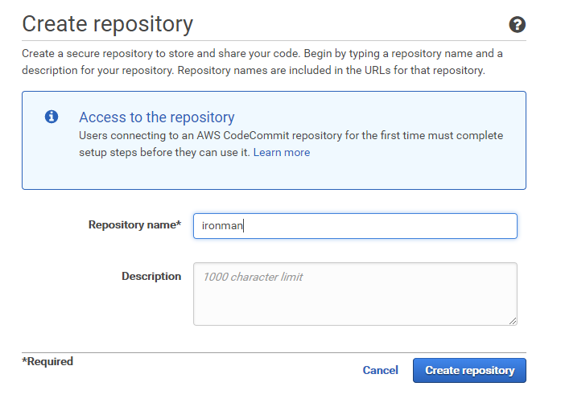
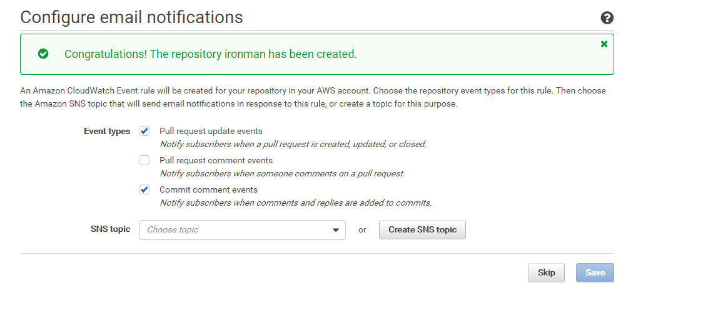
當建立完成後可以看到 Repo 的連線資訊:
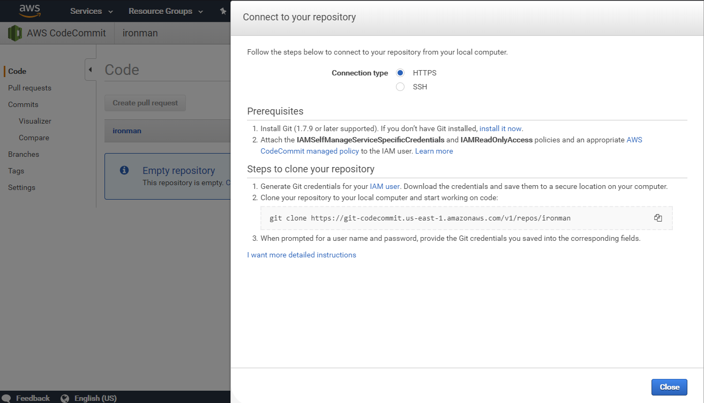
如此一來我們的 Repo 就建立完成。
Integrate Cloud9 with CodeCommit
接下來就簡單示範如何整合 Cloud9 與 CodeCommit 進行開發及板控。
首先我們在已經建立好的 Cloud9 環境的 Bash 控制畫面輸入以下指令確認 git 環境:
git --version接下來執行以下設定將環境準備好:
git config --global user.name "<name>"
git config --global user.email "<email>"
git config --global credential.helper '!aws codecommit credential-helper $@'
git config --global credential.UseHttpPath true設定好後可以看到下面的結果:
git config -l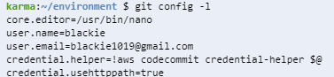
接著我們就可以透過git指令來操作當前的 repo ，而操作的結果也會同步在 CodeCommit的介面中出現:
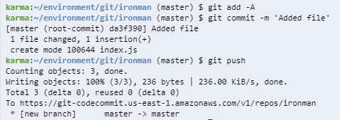
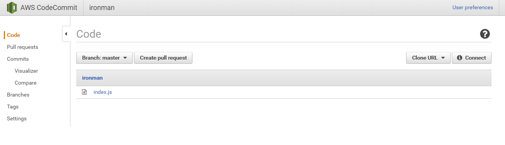
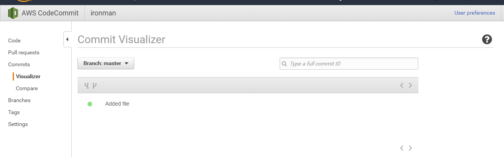